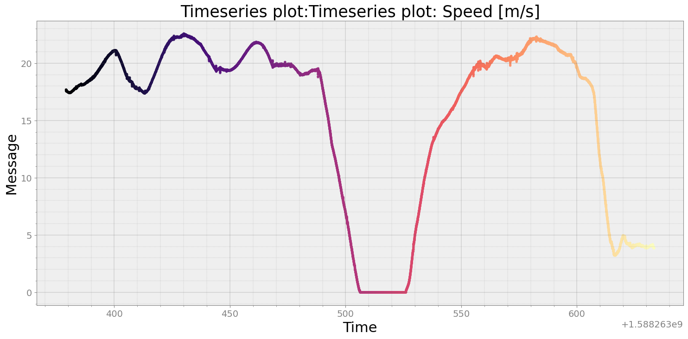
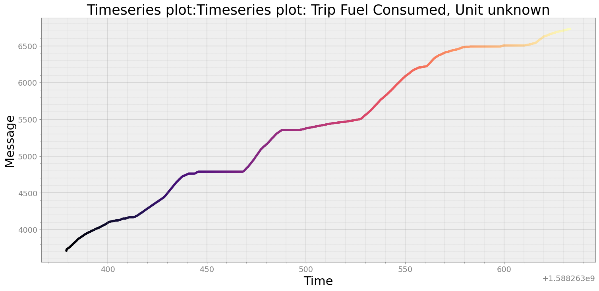
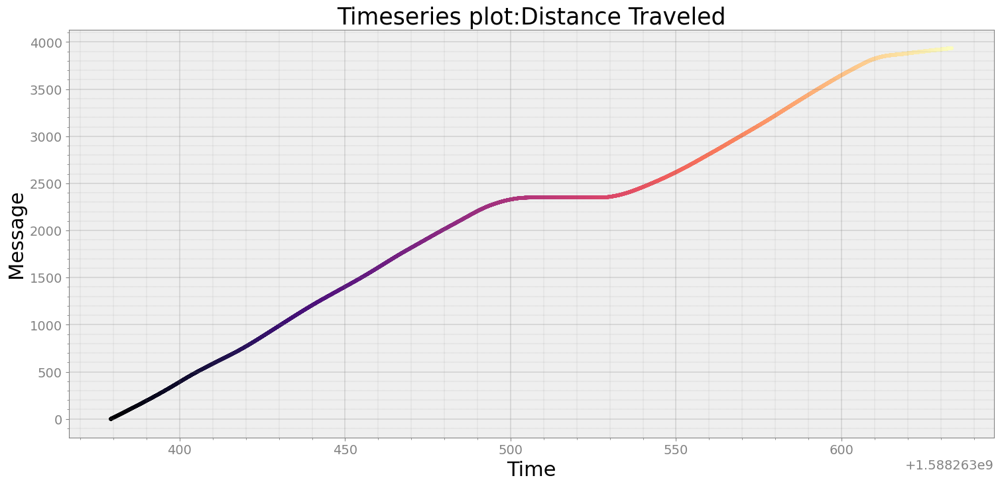
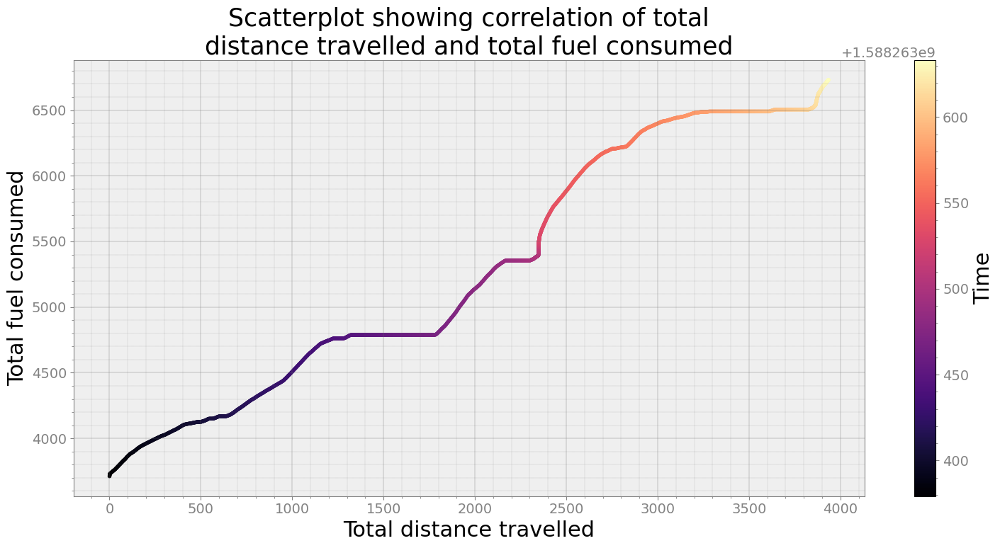

Correlation of distance traveled and fuel consumed¶
[3]:
from strym import strymread
import strym
import matplotlib.pyplot as plt
import numpy as np
import seaborn as sea
Read the Honda Pilot Dataset¶
[4]:
data = "../../PandaData/2020_04_30/2020-04-30-09-16-18_5FNYF6H05HB089022_CAN_Messages.csv"
dbcfile= "../examples/honda_pilot_touring_2017_can_generated.dbc"
[5]:
r = strymread(csvfile=data, dbcfile=dbcfile)
Read wheel speed¶
[7]:
speed = r.speed()
speed['Message'] = speed['Message']*0.277778
strymread.plt_ts(speed, title="Timeseries plot: Speed [m/s]")

Read Trip Fuel Consumed¶
[8]:
msgs804_2 = r.get_ts(804,2)
strymread.plt_ts(msgs804_2, title="Timeseries plot: Trip Fuel Consumed, Unit unknown")

Integrate speed to get total distance¶
[12]:
distance = strymread.integrate(speed)
distance.dropna(inplace=True)
strymread.plt_ts(distance, title = "Distance Traveled")

[13]:
distance
[13]:
| Time | Message | |
|---|---|---|
| 2020-04-30 16:16:19.190859079 | 1.588263e+09 | 0.000000 |
| 2020-04-30 16:16:19.191996098 | 1.588263e+09 | 0.020065 |
| 2020-04-30 16:16:19.192753792 | 1.588263e+09 | 0.033430 |
| 2020-04-30 16:16:19.193773985 | 1.588263e+09 | 0.051425 |
| 2020-04-30 16:16:19.195368052 | 1.588263e+09 | 0.079556 |
| ... | ... | ... |
| 2020-04-30 16:20:33.275126934 | 1.588264e+09 | 3934.963256 |
| 2020-04-30 16:20:33.285344839 | 1.588264e+09 | 3935.002624 |
| 2020-04-30 16:20:33.295157909 | 1.588264e+09 | 3935.040431 |
| 2020-04-30 16:20:33.305240154 | 1.588264e+09 | 3935.079276 |
| 2020-04-30 16:20:33.315083981 | 1.588264e+09 | 3935.117120 |
25494 rows × 2 columns
Scatterplot of correlation of total distance and fuel consumed¶
[23]:
distance_resampled, msgs804_2_resampled = strymread.ts_sync(distance, msgs804_2, rate="second")
[26]:
fig, ax = strymread.create_fig(1)
ax = ax[0]
ax.scatter(distance_resampled['Message'], msgs804_2_resampled['Message'],
c=distance_resampled['Time'], s = 8, cmap="magma")
cbr = fig.colorbar(im, ax=ax)
cbr.set_label("Time")
ax.set_title("Scatterplot showing correlation of total\ndistance travelled and total fuel consumed")
ax.set_xlabel("Total distance travelled")
ax.set_ylabel("Total fuel consumed")
plt.show()

[25]:
distance_resampled['Message'].corr(msgs804_2_resampled['Message'])
[25]:
0.9830666406297385